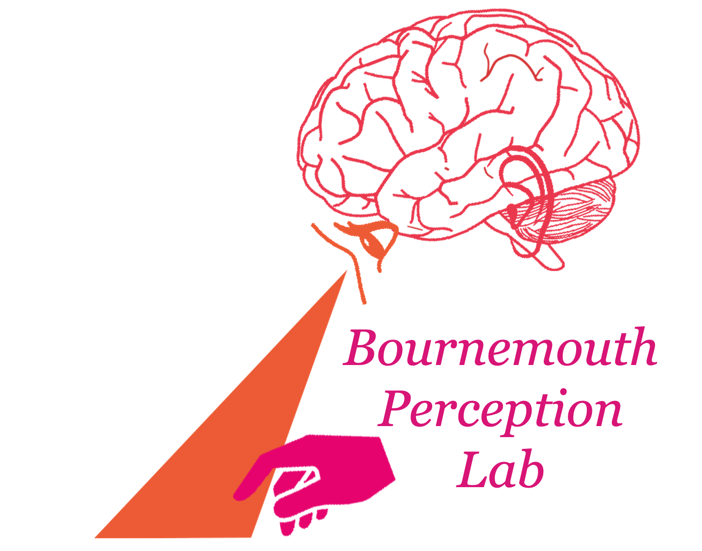
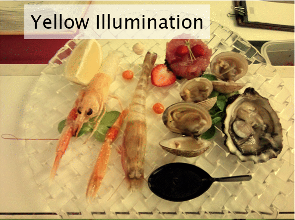
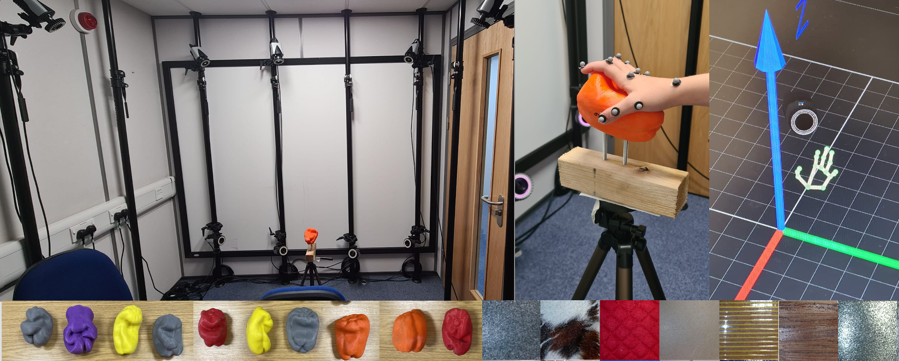

Active sensing
We use eye tracking and motion tracking to study how observers selectively sample information from complex environments.
We study how sensory information becomes perceptual experience: from sensing and active sampling to the internal representations that shape how the world appears.




Perception is an active process. What we experience depends not only on the physical properties of the world, but also on how we sample it with our eyes, hands and other senses.
Our work combines psychophysics, behavioural measurement and computational modelling to understand perception across vision and touch.
We use eye tracking and motion tracking to study how observers selectively sample information from complex environments.
Psychophysical experiments let us measure how things appear and how accurately people perform across colour, material, shape, peripheral vision and multisensory tasks.
We use computational and machine-learning models as models of perception, as ideal observers, and to study how sensory sampling relates to perceptual representations.
Our experiments combine controlled laboratory measurements with lifelike stimuli and increasingly naturalistic tasks.
